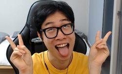

괴물쥐(Monstrat)
트위치에서 리그 오브 레전드를 전문으로 하는 스트리머이다. 과거 카카오TV를 주력으로, 아프리카TV에서도 잠깐 방송을 했었다.
닉네임답게 트위치를 주로 다룬 트위치 장인으로서 옛날 야생의 섬광이 있던 시절 툭하면 트위치를 뽑아 원딜이나 정글을 했지만, 최근엔 트위치가 너무 안 좋아진 데다 본인 입맛에 안 맞는지 조합을 보면서 가끔 트위치를 뽑는다. 평소엔 아무거나 다하지만 시즌10 대세 원딜 픽인 이즈리얼을 잘 다루지 못해 가끔씩 밴픽 페이즈에서 말리는 경우가 있었다.
본인도 이 문제점을 인지하고 이즈리얼을 연습해야겠다고 결심했다. 기본적으로 원딜을 많이 플레이해서 원딜을 더 잘하긴 하지만 시즌 초기에는 원딜보다 다른 라인을 더 많이 플레이했기 때문에 다른 포지션에서도 나쁘지 않은 모습을 보여준다. 원딜을 할 때는 라인전에서 크게 말린 후 버스를 타고 게임을 이겨도 '캐뤼~' 라고 외치는, 약간은 양심없고 뻔뻔한 면이 있다.
욕을 아주 찰지게 하는 욕데레로 본인 특유의 목소리 + 발음으로 인해 특유의 말투가 있는데, 이걸 듣는 이로 하여금 어딘가 끌리는 느낌을 주어 괴물쥐의 방송을 보다보면 어느샌가 괴물쥐의 욕을 듣고 싶어서 방송을 기다리는 자신을 볼 수 있다. 게다가 입에서 쌍욕이 툭툭 튀어나와도 은근히 친절하게 해주는걸 보고 감동 받는 사람도 상당히 많다. 특히 방송 초창기에 리액션으로 개발한 성대모사로, 럼블이 사망할 때 대사인 '후잉! (으~억)'이 매우 끌려서 맨날 ' 후잉! '을 해달라고 하는 시청자들도 많다.
또, 성격을 좀 과장되게 말하자면 조울증을 연상시킬 정도로 기분이 시시때때로 바뀐다. 방송 중 연패를 하면 갑자기 빡쳐서 쌍욕을 날리다가도 한 판을 이기면 다시 기분이 좋아진다. 이것도 괴물쥐의 매력이라는 사람도 많은 듯. 다만 상단에 써 있던 괴물쥐 방송만의 특징은 트위치에 이적하고 유튜브 구독자도 많아져 대기업으로 성장하면서 '순한 맛'으로 변해 거의 사라졌거나 다른 특징으로 대체되었다.
마스코트는 카카오TV부터 트위치까지 '코'며, 채팅창에서 장지환 + 코(혹은 콧구멍)의 조합을 한 닉네임들을 쉽게 찾아볼 수 있다. 코는 평균보다 약간 더 큰 편이지만, 콧구멍이 말도 안되게 엄청 크다. 그래서 콧구멍에 진짜 500원 들어가나요? 등의 댓글도 쉽게 볼 수 있다. 자신의 트게더 이름도 '쥐게더'인데, 쥐게더의 ㅜ 부분이 코 모양으로 되어 있다.